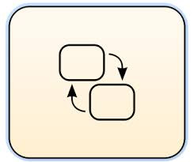
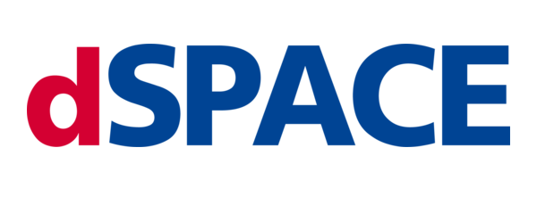
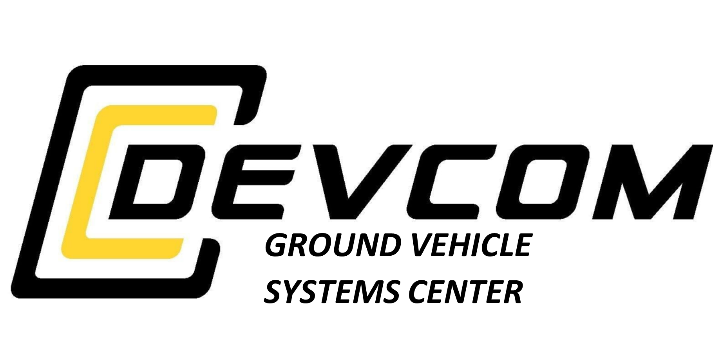
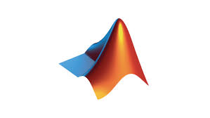
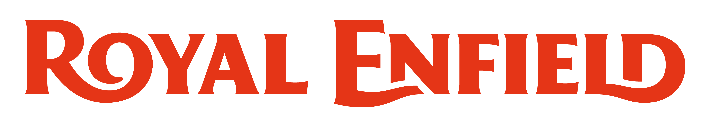
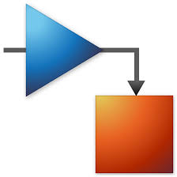
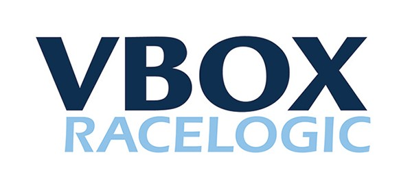

May 2025 – July 2025
SUMMER INTERN, FORD MOTOR COMPANY
Chassis Controls Software & Systems Engineer - Research & Advanced Engineering
Division
Dearborn, Michigan (US)
Steer-by-Wire (Dual-redundancy concept): Control
Software Development →
Systems
integration →
Real-time validation.
- Designed & validated control strategy across MiL, HiL, in-vehicle.
- Integrated algorithm into Vehicle Motion Control architecture; versioning on GitHub.
- Engineered hardware setup; prototype debugging; established real-time CAN communication
- Benchmarked traditional vs. SbW system using scenario development and driver clinic data
- Collaborated with suppliers & cross-functional teams for seamless HW/SW integration
- First engineer to test the new SbW concept real-time at Ford’s proving grounds.
- Migrated calibration interface from dSPACE ControlDesk→ ATI Vision to streamline field tuning.
- Control systems & vehicle dynamics
- MiL / HiL / in-vehicle validation
- Real-time CAN communication
- System benchmarking & calibration
- Hardware bring-up & debugging
- Cross-functional collaboration





<<<<<<< HEAD
=======
>>>>>>> 2484de73fb09da056a9706b364f04387acdf99ef
Jan 2024 – Apr 2025
DEEP ORANGE 16 INTERN, CLEMSON UNIVERSITY
Vehicle Dynamics & Controls Engineer
Greenville, South Carolina (US)
Project Focus: Developing a rapid response vehicle
for disaster scenarios,
involving
prototype
development with close industry collaboration
- Developed control algorithm and start-up state machine for Brembo Sensify brake-by-wire system.
- Built HiL test bench setup for brake-by-wire testing, calibration, and fault detection.
- Derived electronic park brake (EPB) use cases and integrated EPB logic with service brakes and HMI functions.
- Designed DYC torque-vectoring algorithm to emulate differential behavior.
- Engineered wiring harness and test bench setup for Fox Live Valve suspension PWM damping control.
- Developed custom MoTeC C1812 HMI with CAN GUI and steering-wheel button navigation.
- Applied V-model systems engineering for end-to-end integration - from personas, requirements and scenarios to verification and validation as per US Army TOPs & FMVSS standards.
- Built a supervisory brake control framework that streamlined functionality & debugging.
- Solo-delivered MoTeC center-console HMI in 2 months , including vehicle CAN wiring integration.
- HiL/MiL validation & bench design
- State machine development & supervisory control
- Model/Non-model based control system development
- Cross-domain integration
- Real-time CAN communication and diagnostics
- HMI customization and GUI development
- V-model systems engineering



May 2024 – Dec 2024
GRADUATE RESEARCH ASSISTANT
Professor Dr. Matthias J. Schmid
Greenville, South Carolina (US)
Vehicle dynamics controls & test engineer: Deep
Orange 14
(U.S.Army Prototype) and BMW 535xi research vehicle
- Led vehicle instrumentation and data acquisition, integrating IMU, accelerometers, steering angle, ride height, and slip angle sensors with CAN data for dynamic analysis.
- Planned and executed vehicle dynamics tests at ITIC proving grounds, including double lane change, steering pad, acceleration, and braking maneuvers.
- Managed data collection and dissemination for student analysis and coursework deliverables.
- Supported virtual vehicle model development using sensor and CAN data for dynamic validation.
- Enabled first-ever big-stage testing for the program.
- Test data leveraged to build virtual vehicle model and run simulations.
- Vehicle instrumentation & Data acquisition system setup and synchronization
- Test planning and execution
- Cross-functional collaboration (students, faculty, and lab engineers)
- Post-processing and visualization - DAQ systems & MATLAB scripts



Aug 2018 – Jun 2023
ROYAL ENFIELD (GLOBAL HEADQUARTERS)

Assistant Manager – NPD (Chassis Testing & Validation)
Chennai, Tamil Nadu (India)
- Project manager for chassis systems integration; led cross-functional team discussions, problem-solving, trials, RCAs & design changes.
- ABS development/test engineer: Signed off ABS calibration programs for homologation and performance validation.
- Vehicle performance test engineer: verification plans, validation reporting for brakes, ride/handling, ergonomics.
- Led a team of seven engineers in prototype build, validation, and production readiness activities across five motorcycle platforms.
- Established internal testing procedures aligned with ECE, FMVSS & Indian ECE, FMVSS & Indian regulations.
- Led prototype build across five platforms, supporting development from concept to SOP.
-
<<<<<<< HEAD
- Won the Trailblazer Award (twice) for ABS development & overall project maturity.
- Represented Testing & Validation at the global launch of Hunter 350 (Bangkok). =======
- Won the Trailblazer Award (twice) for ABS development & overall project maturity.
- Represented India's testing & validation team at the global launch event of Hunter 350 (Bangkok). >>>>>>> 2484de73fb09da056a9706b364f04387acdf99ef
-
<<<<<<< HEAD
- Vehicle testing & validation (brake systems, ride & handling)
- ABS calibration & homologation
- Program management & XFN leadership
- Regulatory compliance (ECE, FMVSS, Indian regs)
- Prototype build & DV/PV planning =======
- Vehicle integration, testing & validation
- Design Verification Plan & Report generation (DVP&R)
- Project management & cross-functional leadership
- Performance testing (Brakes, Ride & Handling, NVH & Ergonomics)
- Team leadership & Stakeholder coordination
- Prototype build & development >>>>>>> 2484de73fb09da056a9706b364f04387acdf99ef




- © 2025 Ashwin Kumar Rangarajan.
All rights reserved.